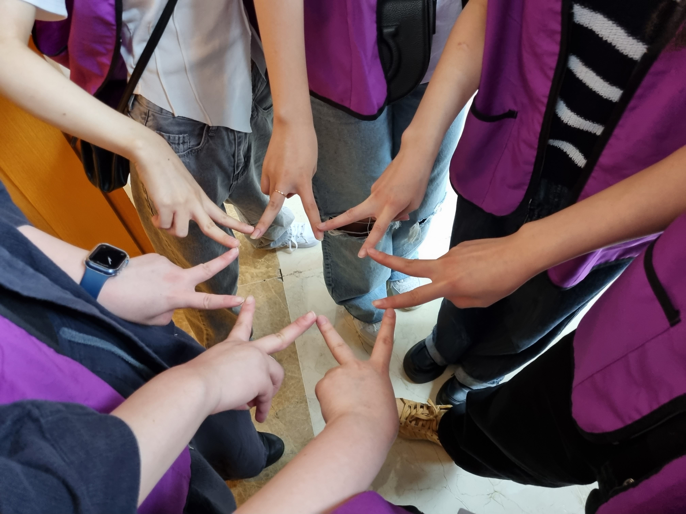

VISUAL COMPUTING · 영상 · 그래픽스 · 물리
영상 속 움직임을 읽고,
다시 만들어내는
기술을 연구합니다
컴퓨터그래픽스 연구실에서 물리 기반 시뮬레이션으로 연구를 시작했고, 지금은 단안 영상에서 반려견의 보행을 3D로 복원하는 졸업논문을 쓰고 있습니다. 공연과 전시, 문화유산처럼 사람들이 직접 보고 반응하는 콘텐츠를 가능하게 하는 기술을 만들고 싶습니다.
소속가톨릭대 CUCG Lab수상KCGS · HCI Korea전시국립중앙박물관 · 국립과천과학관


사진 자리
images/acupoint.jpg
images/acupoint.jpg
2025 · 박물관 전시
한방 침자리 실시간 트래킹
몸 위의 침자리를 실시간으로 찾아 보여주는 전시 프로그램. 국립중앙박물관과 국립과천과학관에 전시됐습니다.
사진 자리
images/cospace.jpg
images/cospace.jpg
2026 – · 쿼레이트
CoSpace 공간 배치 시각화
가구에서 공장 라인, 전시 부스, 선박 내부까지 3D로 배치해 보는 공간 시각화 도구입니다.

LUL · 10명 팀
산군
퍼즐을 풀 때마다 공간이 바뀌는 방탈출 어드벤처. 직접 만든 동아리 LUL에서 10명이 함께 만들었습니다.

2023 · 컴퓨터그래픽스와 딥러닝
메쉬 피팅 · DQN 강화학습
구를 고양이·거미 모양으로 변형하는 메쉬 피팅과, 달 착륙선을 DQN으로 착륙시키는 실험을 했습니다.
사진 자리
images/hatch.jpg
images/hatch.jpg
2023 · Maya
메롱해치 3D 모델링
안예은의 노래 ‘메롱 해치’ 뮤직비디오를 위한 해치 캐릭터를 Maya로 모델링했습니다.
Color Science
색채학
색의 기본 성질부터 색 체계, 퍼스널 컬러, 트렌드 컬러 기획까지.
Fashion Illustration패션 일러스트레이션
인체의 비례와 구조, 옷이 몸 위에 걸리는 모습을 그리는 법.
CADCAD 공간 설계
명동 애플스토어를 분석해 도면과 프레젠테이션 보드를 만들었습니다.
Drafting & Spatial Studies제도와 공간 연구
가상 공간을 만들기 위해 시작한 제도 공부.
Storyboard & Animatics스토리보드와 애니매틱스
영상 제작의 프리프로덕션: 기획, 스토리보드, 애니매틱스.
MayaMaya 3D 그래픽스
모델링, 셰이딩, 스크립팅, 이펙트, 렌더링 파이프라인.
05